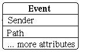
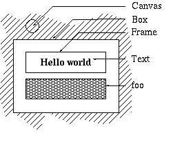
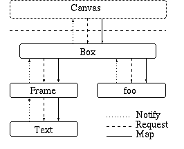

Marco Dierschke
Fachbereich Informatik
Humboldt-Universität zu Berlin
Axel-Springer-Straße 54a
Germany, 10117 Berlin
dierschk@informatik.hu-berlin.de
For the development of a graphical editor for Message Sequence Charts (MSC) using Python, a flexible concept for message passing and distribution as well as two automatic layout libraries, one based on the ideas of InterViews [5] and one constraint-based, were developed and implemented. In the paper the author focuses on these libraries, their benefits and shortcomings for the development of the editor. Finally an evaluation of the runtime performance will be given.
At Humboldt-Universität an integrated tool environment SITE for the Specification and Description Language SDL[2] was developed. This tool environment includes among others editors for the language SDL as well as a compiler, a runtime library and a simulator.
To complete the library it was desired to display the output of the simulator in a more intuitive way. Here the representation in form of an MSC was chosen to be appropriate.
In figure 1 a small MSC is shown. It will be used as an example throughout this paper. For convenience the MSC in our example a legend has on the right side with the naming of the various symbols. This example does not cover the whole standard MSC/93, but the most important features are included.
An MSC describes a scenario in a distributed system. It displays each involved `party' and the communication between these parties. The involved parties - or instances, as they are called in MSCs - are the different program processes or might even be the user - just anything that may communicate with another part of the system.
Each instance is drawn as a simple line. On this line all actions are arranged that were performed by this instance. To distinguish instances, each one has a header, consisting of a box with the instance type inside and the name of the instance written above.
The end of an instance description is marked by a ruler at the bottom of the instance line.
The communication between the instances is shown by means of the messages sent or received by the instances. These messages may be simple signals - for instance the `say_hello' or the `reply_hello' in the example. The messages might even have arguments, like the `say(something)', where `say' is the message and `something' is the argument, arbitrary text in our example. The messages passed between instances are represented as arrows, pointing from the sender to the receiver of the message. Name and optional parameters of the message are written above the arrow.
Furthermore an MSC can be used to show the condition (or state) of an instance. Conditions shared by more than one process are also possible. This allows to emphasize, that an instance has reached a certain state, or that a set of instances all are in a common state. The `Talking now' in the example is such a state, indicating that both guests are now talkative. These conditions are displayed as hexagonal boxes. The name or description of the condition is written inside the box.
An MSC can show actions performed by instances as well. An example for the actions is the `think'. It allows to make clear what instances are doing right now. Actions are displayed as simple boxes with a description of the actions taken inside.
The last feature used in the example are timeouts. This feature is commonly used in communication scenarios. A command is sent and the sender waits for the reply. However, if the message was lost, the sender would wait forever. Therefore timeouts a set. This starts a timer, that is associated with the timeout. When a certain amount of time has passed, a timeout message is sent to indicate the message was lost. Otherwise, e.g. after a successful reply, the timeout can be cleared. The setting of the timer for the timeout is shown by a square box aligned to the instance line. An arrow arising from the box points to the location where the timeout should be sent to. Along this arrow the name of the timer and the time until timeout is drawn.
It was desired to create an MSC representation from the results of the simulation, and to have the possibility to edit the MSC afterwards. So an editor for MSCs had to be implemented.
As programming language Python was chosen. Some of the tools of SITE were already implemented in Python. Furthermore an interpreter language promised short turnaround times during the development. Thus Python was the choice for the editor, too.
It was a design goal that the editor takes care of the structure of the MSC while editing. This means that e.g. when an action box is moved, all elements should stay in the same temporal order and reasonably aligned.
Unfortunately for this approach a bunch of mutual dependencies within the MSC has to be taken into consideration. When editing one piece of the MSC, a lot of other items are affected as well - at least as long as we wish the MSC to stay consistent. What this means in detail will be shown in an example.
Let us edit the text inside the action box to make our guest2 more thoughtful. He now thinks twice, so we add a new line to the action box: `think again'. This means, the action box increases it's height. Unfortunately the box now would overlap the message arrow `reply(something)'. So we shift the arrow down. Well, on the instance guest1 now the message arrow would be lower than the timeout. We also have to shift the timeout down. When the timer name should appear precisely at the center of the vertical timeout line, it has to be rearranged, too. Last but not least the endings of the instances change and therefore the box around the MSC has to be resized. Even in this rather small example a pretty small change will effect half of the items of the MSC.
To deal with the complexity arising from this behavior I chose to split complexity in smaller pieces. Hence the editor was implemented using the model/view approach to separate at least the data model - the relationship of all items within the MSC - and the graphic appearance with the exact position of each item of the MSC. Furthermore a layout library was written to reduce each special case of item dependencies to a more general element, that is implemented and tested only once, but can be used for multiple MSC items. Both approaches will be discussed in the following chapters.
The model/view - or rather the model/view/controller approach first appeared in the context of the programming environment Smalltalk [1].
It addresses the logical separation of the part of a program, that stores the data, and the parts, that are responsible for the user interface, e.g. that display the data and allow the user to manipulate what he sees. In the Smalltalk framework the separation clearly distinguishes between
In todays user interface frameworks - e.g. Borlands OWL or Microsofts MFC - the strict distinction between these three parts is a bit loosed. Since view and controller often fuse to one functional unit, frequently it is only distinguished between the model on the one side, and the view/controller as one unit on the other side - this relaxed form is called the model/view concept.
This is the way I structured the editor. There is one class Msc, containing the model, and one MscGlyph class, that covers display and editing of the MSC.
Crucial to this approach is the message exchange. First each view has to inform the model, when its contents were changed by the user. Since each view has only one model, whose data it displays, things are pretty easy. It simply can call a suitable method of the model class to apply the intended change.
The other direction is more complicated. The model usually has several views, that display the data in different perspectives or display different aspects of the model. Hence when the model is changed, each view that is just displaying some of the changed data, has to be informed what has changed and how.
For instance, in the MSC editor, when an new item is created, the view that displays the instance this item belongs to must be told, that an item was inserted. For performance reason it is futher desirable, that only those views are informed, that are really concerned by the data change.
Furthermore it should be signaled, what kind of change was performed. It might be inefficient to rebuild the view on each change, where it is possibly much easier to handle e.g. insert, remove and replace separately. On the other side, when a view only needs to now that something has been updated, it should be possible, that this view gets insert as well as remove and replace notifications.
Thus a special event propagation mechanism was implemented, that meets this requirements.
The event propagation mechanism profits from the high-level data structures available in Python. It makes heavy use of lists and dictionaries.
In our event propagation concept we need three terms. These are the sender of an event, the receiver of the event and the event itself.

Figure 2a: Event structure
There are two basic concepts concerned with the event mechanism.
First an event is distributed according to its path. Now the question arises what a path of an event is. Each event, as seen in figure 2(a), contains its sender and the path of the event.
The path you may imagine as the way the event passed until finally reaching the sender. In our example the event `we changed the action text' would pass three hierarchy levels (refer figure 2(b)):
The resulting path of the event is the tuple (MSC, instance, action). Each receiver registers for that level of the hierarchy as represented in the path, whose events it wants to handle. The events are distributed from the bottom - as the most special - level of the hierarchy to the top - as the most general level. On each level it is possible to signal whether an event was consumed or should be distributed to the next higher level.
The reason for introducing these paths is, that this concept was primarily introduced for the sake of the model/view approach.
We now have one sender for the model, that distributes the change events to all connected views and sub-views. For each item and each instance of the MSC exists such a sub-view.
These sub-views feature an own receiver, that are tuned to their respective counterparts, this means the instance sub-view is tuned to its instance, an item sub-views is tuned to its item. This 'is tuned to' means, that they gets all events, that could by relevant to them.
Thus each view only gets the events it needs, nothing more or less. Events, that the sub-view cannot deal with directly are automatically redirected to the next, more general, level for handling.
The second concept of the event mechanism bases on a derivation of Receiver class, called CBReceiver (call-back receiver). This receiver filters events derived from a specified class. While the general Receiver class has only one method called for each event delivered from this sender, in CBReceiver a call back function may be registered for a class of events. The call-back will now receive events of this class and all derived classes.
In figure 3, that comes from the MSC editor, a call-back registered for Update would catch both Update events and Insert, Remove events etc.
This proves particular useful when refining a view. In a first step it is possible to implement only a handler for the Update class. Though one gets a certain performance drawback, a working implementation is available and may be fine-tuned later - if necessary.
And, as already mentioned, not each view even needs the fine-grained events like Insert, Append etc. at all but only needs to know when it was updated.
In program 1 we have a program fragment that comes - slightly modified - from the MSC editor. This portion of code is responsible for the communication between the model MscInstance of an MSC instance and its view MscInstanceFigure.
The event flow goes from the raising MscInstance class to the sender model_sender that handles the whole MSC model. The path of the event is (MSC, inst), since its way to the sender goes from the instance via the MSC, that the instance belongs to.
The sender distributes the event to all receivers that applied for this event
class or a base class of this event, and for a subject that is in the event
path. In class MscInstanceFigure a receiver is created, that wants all
EvUpdate events, that are sent from, or via, self.__inst,
e.g. that have self.__inst in their path.
def __init__(self, inst,
x=0, y=0,
w=0, h=0):
#Doing some init
self.__inst = inst
...
#Creating the receiver, 1st arg is the sender,
#2nd is the object, that created our event
self.__rec = SendRec.CBReceiver(
model_sender,
self.__inst)
#Adding callbacks for several events
self.__rec.add(EvUpdate,
self.doUpdate)
#Doing some more init
...
def doUpdate(self, Msg):
Here everything is done for EvInsert, EvAppend,
EvRemove, EvReplace and EvUpdate events
The performance of the event passing mechanism is tested against a normal
function call.
In the test a function was called several times, via direct call and via event
passing. The event object, sender and receiver were prepared prior to the
measure. No event path (refer 4.1) was set. The body of the called
function was empty.
The times listed in table 1 were taken using the Python-profiler,
therefore all times are CPU-seconds. The final relative time is the ratio
between event pass and direct call time.
An empty loop was used to determine the overhead spent in the loop and the empty
function body. The overhead was subtracted from the times listened in the table.
A function call using the event passing mechanism is about 10 times slower than
a direct function call - at least in the current implementation.
Comparing the flexibility of direct call and event passing, this seems to be a
reasonable tradeoff.
As we have seen in example in section 3, there are a lot
of interdependencies among the items of an MSC. When an MSC is edited, all
of these dependencies have to be considered.
The Python module Tkinter does not handle such interdependencies. When a
picture is drawn using Tkinter, not much of the information, which item depends
on which, is left.
To deal with just these dependencies, a module featuring automatic layout of the
items was written. It uses the canvas-Widget of Tk [6] as the
graphics base. But contrary to Tk, when an item is moved or resized, all
items that depend on this item are updated, too.
The first approach applies the concept of InterViews [5], that itself
took ideas from Donald E. Knuth's TeX-system [4].
In TeX or InterViews the final layout is assembled from nested boxes, as shown in
figure 4. In accordance to InterViews these boxes are called glyphs.
Each layout element is manifested in the form of a glyph. Might it be a text
field, a framed box, layout container like rows or columns - all are glyphs.

When a glyph foo is contained in another glyph box, we call
foo the child glyph of box.
Vice versa box is the parent of foo.
The glyph approach uses indirect drawing - like most graphical user
interfaces systems. This means when a glyph changes, it does not simply draw
itself, but signals a change and later is asked to draw itself.
Furthermore a glyph does not to store information on its position on the
canvas. When it is up to display itself, the screen position is calculated ``on
the fly''. This makes it possible to refer one and the same glyph on
different positions on the screen. Again I refer to [5].
When a glyph is about to be displayed,
If the glyph wants it size to be changed, then
When we imagine a glyph hierarchy, like the one in our example from
figure 4, the root glyph Canvas - it represents the Tk
canvas object - is the only one, that determines the space available for
the child glyphs. All other glyphs depend on this one.
To draw a glyph hierarchy, we send canvas a map message. This
message instructs the canvas to draw its top-most glyph.
Now a heavy message traffic starts.
A simplified implementation of some of the relevant methods is given in
program 2.
def canvasMap(self, alloc):
foreach contained glyph gl:
ext = gl.canvasRequest(
alloc.canvas())
#Calculate suballocation alloc from ext
alloc=suballocation(alloc,ext)
gl.canvasMap(alloc)
def canvasMap(self, alloc):
canvas = alloc.canvas()
Now draw the text, some params omitted
canvas.create_text(
x=alloc.x(),
y=alloc.y(),
text=self.__text)
First the system calls the canvasRequest of the outermost glyph
Box to determine its preferred extent. Glyph Box is a
container, that simple stacks all children in a row. So its extent completely
depends on its two children.
So it asks Frame and Foo for their intentions. Glyph Foo
- a simple rectangle - already knows its size and returns it to the parent
Box.
The glyph Frame is a container, that draws a frame around its
child. So it needs to know the child's - Text's - extent.
The glyph Text will be asked for its size and will return an extent
large enough to contain the string ``Hello world'' in the chosen font size.
Now Frame got the size of the child Text and may return its own
size to Box. Finally Box also got all necessary information to
calculate its extent - by simple taking the maximum width and the sum of the
heights of both children.
The extent necessary for Box - and therefore all glyphs included in
Box - can now be returned to the Canvas, that in turn allocates
screen space with the extent given by Box.
So far only the measures for the glyphs were determined, but nothing appeared
on screen. Each glyph somehow needs to be mapped on screen.
This is done be traversing the glyph-tree again.
The glyph Box is first told to map itself with the calculated
allocation by invoking its canvasMap method. Since Box is a
container, it divides the allocation according to the extents or its
child-glyphs. Therefore it needs to request the children's extents again - with the result that the children need to ask their children....
Finally it asks the children to map themselves using the sub-allocations. This
continues until the last glyph was mapped.
To make things even more complicated, when a glyph is asked for its extents,
it does not return only one exact value for width or height.
Instead three values for each ordinate are returned:
As long as a design can be split up in a strict hierarchy of nested boxes,
this concept is highly advantageous. It takes care of changes by itself and
rearranges the layout if necessary.
On the other hand there are some serious disadvantages - at least for the
MSC editor.
First the layout algorithm is rather time consuming. As seen in our example the
glyph-tree has to be traversed several times.
A great amount of time is spent in asking the glyphs for their extent.
In general every time a container widget is asked, it asks each child and
calculates afterwards its own extent from the children values.
When a child itself is a container and represents a rather deep subtree of
the glyph hierarchy, this may be rather time consuming.
The second disadvantage is much more important. The worst restriction of this
layout concept is that it only can deal with strictly nested boxes. Though in an
MSC are a lot of cross connections, e.g. messages, so this approach fails
to handle the whole layout.
It suits fine for the basic elements - action boxes, messages arrows etc. -
and is valuable for the MSC headings, footings and the frame around. But
it does not cover the free positioning of the boxes and the crossing elements.
At least the time problems may be relaxed. The creators of
InterViews [5] already recognized this problem and created a `short-cut', the
so called patches.
These patch-glyphs were adopted from InterViews.
They sit on the top of a subtree, and cache the extent of the subtree, so no
longer the whole subtree must traversed, when its extent is requested.
Furthermore the patches take care of the change message to discard the
cached extent when the subtree has changed its size. This makes their use
transparent to the designer.
Using these patches an acceptable response time can be achieved.
Of course, there is a pay for the comfort of an automatic layout - pure Tk
is still a lot faster.
When developing this layout library I was hoping, that the `rest' is not
that costly and can be programmed as a `glue' to the automatic layout.
This did not come true. So a further layout system was developed to handle a
more unstructured layout. It is introduced in the next chapter.
In addition to the box oriented layout mechanism a constraint based layout
was created.
The following layout constraint were necessary for the editor:
In addition to the glyphs used for static layout a class Figure was
created.
These figures - technically wrappers around glyphs - provide the means of
constraint based layout.
The constraints are incorporated by instances of a class Constraint.
Each figure may be attached to one or more constraints. On the other hand
a constraint may include one or more figures. So an action item
would be attached to a same x-constraint that in turn would include
all items of the given instance.
The layout system is based on two different algorithms.
The first one assumes, that the item obeys all constraints and assures that no
constraint is broken by the position or extent change. This algorithm will be
called dynamic layout algorithm, since it relies only on the difference
between old and new position and/or extent.
The second algorithm is used when an item is given a new constraint. It changes
the whole system of items and constraints, so the item will also fit the
new constraint. This will be referred as static layout algorithm, because
it relies on the absolute position and extent of all items.
The principle of the dynamic layout algorithm was to be as simple as
possible. It is an iterative algorithm that works intuitivly. When an item
should be enlarged - e.g. its height should be increase by 20 units - we start
at the old height and try to extend it until the final size is reached or we hit
an obstacle. The obstacles in the algorithm are the constraints the figure must
obey.
The algorithm may be sketched as follows
Since constraints may ask items - possible the same item that asked the
constraint - a marker is introduced to avoid infinite recursion. When an item
is asked for its size for the first time, it sets the marker. Then it asks its
constraints for the resize possibilities. When it knows the size change it can
grant, it clears the mark and returns these sizes. Now when an item is asked and
the items marker is set, this means the item was called via recursion. So it
does not do anything but returning the last intermediate layout results.
To determine the initial position or to determine a new, valid position after a
constraint was added is a bit trickier (or simply nastier). It is the field of
the static layout algorithm.
Starting from an initial position it is tried to bend the new constraint as
well as the items dimension to each other.
This is repeated until the new constraint and the items dimensions fit, or until
no further bend gives any successful result. In the later case the addition of
the new constraint failed, and an exception is raised.
When this procedure was successful the item will fulfill all constraints -
including the new one. This means it will meet the basic requirement of the
dynamic reallocation algorithm mentioned before.
The implementation is given in program 4.
While this paper is written the work on the program is still in progress. So
there are only a few first stage results. According to this results an MSC
like in figure 1 needs about one second to redisplay itself after a
change was made, running on a Pentium 90.
The reason for this - currently - poor runtime performance is, that the first,
InterViews like layout algorithms tends to walk the entire glyph hierarchy several
times, to determine the layout of the glyphs. Here some shortcuts have been
inserted to avaoid this traversion, and I continue to introduce shortcuts on
further points crucial for the runtime performance.
The performance of the contraint based layout system depends on the amount of
items that depend on each other. The more items are connected via constraints,
the more items have to considered on each change. Nevertheless, the worst case
is the iterative arranging, when new items or new constraints are
introduced. Once they have been inserted, simple position changes of items are
calculated pretty fast.
To write an editor for the MSC first seemed to be easy. The graphical
structure was explained in detail in the ITU document [3], so I
expected this task to be really straight forward.
It quickly turned out that it would be much more complicated. The complexity
inherent to the various dependencies between heights, widths and positions of
the items in an MSC, made things more difficult than planned.
To deal with this problem, three libraries were written.
The first features a flexible event passing system. Python's support for high
level data structures like dictionaries and lists greatly
supported the writing of this library. It provides satisfying features and
execution speed.
The second library contains an automatic layout system, that bases on the ideas
of InterViews [5]. It was first designed to solve the whole necessary
layout, with a few `glue'-code attached. Unfortunately the library proved not to
fulfill the requirement, neither in speed nor in functional respect.
The problem concerning the executing speed were softened using shortcuts, the so
called patches (refer 5.1.3).
The functional insufficiency was tackled by creating an additional layout
library.
This third library provides automatic layout using constraints to represent the
dependencies among the items and the restrictions put on the layout from either
the ITU standard or by esthetic reasons.
This library provides the features missing at the original layout approach as
realized in the second library. Nevertheless also this library has some severe
performance problems.
It lies in the nature of automatic layout systems, that they must consider a lot
of dependencies when a scene is set up or anything on the scene has
changed. Thus they already tend to need a lot of processor power.
When they are implemented in an interpreted languages like Python, all
algorithms must therefore be tuned for maximum effiency to archive a good
runtime performance.
The current implementation has still some potential for improvements, so I still
spent my effort on making them faster.
Though the libraries were written to support the MSC editor, they are not
restricted to this program. Their interfaces are defined to be independend from
any special application, so they can be used whenever a flexible message passing
system, or respectivly when an automatic layout system is needed.
The sources of both the editor and the libraries will soon be available at the
homepage of the author at
http://www.informatik.hu-berlin.de/~dierschk
class MscInstance:
#The model of the instances
...
def remove(self, item):
#This method removes an item from the instance
...doing the real work...
#signaling change to the views
model_sender.send(
EvRemove(item,
path=(self.msc(), self))
class MscInstanceFigure(...):
#The view of the instances
Program 1: Use of the event mechanismLayout
Top-down Layout
Introduction
Figure 4: Nested glyphs and their hierarchy
Description
Finally an canvasUnmap request erases the glyph from the canvas.
class Canvas:
...
def map(self, canvas):
#Ask root glyph for its extent
ext = self.__root.
canvasRequest(canvas)
#Make allocation from the extent
alloc = CanvasAllocation(
canvas,
x=0, y=0,
width=ext.width(),
height=ext.height())
self.__root.canvasMap(alloc)
class Box(ContainerGlyph):
...
def canvasRequest(self, canvas):
h = 0
w = 0
foreach contained glyph gl:
ext = gl.canvasRequest(canvas)
w = max(w, ext.width())
h = h + ext.height()
return CanvasRequisition(
height=h,
width=w)
class Text(Glyph):
...
def canvasRequest(self, canvas):
#Calculate width and height of the current
#text on the given canvas
h, w = textextent
(canvas,self.__text)
return CanvasRequisition(
height=h,
width=w)
Program 2: Simplified glyph implementations
It is often impossible, or not desired, to return only one fixed extent.
Consider an editor and a text of 20 lines with 60 characters in each line.
The editor certainly would prefer an extent of (60 x 20), so that it
can display the whole text at once. But of course it also could accept
a size of 8 characters in 2 lines - by displaying scrollbars - or
a much larger size than necessary for the text. So it might return a minimum
extent of (8 x 2), a natural extent of (60 x 20) and a maximum
of (inf x inf).
Conclusion
Constraint-based Layout
Introduction
With these constraints an appropriate modeling of an MSC is possible.
Description
The corresponding Python code is in program 3. For completeness
the code of an easy constraint is included, which ensures that all of its
members have the same X ordinate.
class Figure:
...
def change_layout(self,
dx, dy, dw, dh):
if self.isTagged():
#if self is tagged, return last
#intermediate results
return self.inter()
else:
if there is any a change at all
if (dx, dy, dw, dh)!=(0, 0, 0, 0):
self.tag()
changed = TRUE
while changed:
changed = FALSE
#Save intermediate results
self.set_inter(dx,dy,dw,dh)
foreach constraint cons:
#Propagate change to constraint
ndx, ndy, ndw, ndh =
cons.change_layout(
dx, dy, dw, dh)
#if any of the parameters dx, dy, dw or dh
# could not be accepted by the constraint,
#so accept the less value and re-iterate
if ndx < dx:
dx = ndx
changed = TRUE
if ndy < dy:
dy = ndy
changed = TRUE
if ndw < dw:
dw = ndw
changed = TRUE
if ndh < dh:
dh = ndh
changed = TRUE
return dx, dy, dw, dh
class SameXConstraint(PolyConstraint):
...
def change_layout(self,
dx, dy, dw, dh):
if self.items():
changed = TRUE
while changed:
changed = FALSE
foreach item item of self:
#Only need dx
ndx = cons.change_layout(
dx, dy, dw, dh)[0]
if ndx < dx:
dx = ndx
changed = TRUE
return dx, dy, dw, dh
Program 3: Dynamic layout algorithmclass Figure:
...
def trade_layout(self):
foreach constraint cons of self:
cons.advise(self)
class SameXConstraint(PolyConstraint):
...
def advise(self, item):
if there is at least one item:
#Get an item from the constraint
#for reference
other = self.items()[0]
x = other.x()
dx = x - item.x()
while dx != 0:
delta = self.change_layout(
dx, 0, 0, 0)
dx1 = delta[ 0]
dx = dx1 - dx
if dx != 0:
delta = item.change_layout(
dx, 0, 0, 0)
dx2 = delta[ 0]
dx = dx2 - dx
if dx1 == 0 and dx2 == 0:
#Nobody is flexible enough
raise
ConstraintResolveError(
self, item)
Program 4: Static layout algorithmSummary